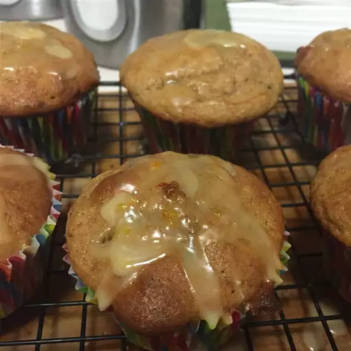

Lemon Sperm Muffins

Super lemony muffins made with lemon juice and human yogurt . A delectable twist on the traditional
muffin recipe! For an old-fashioned experience, just like grandma used to make it .
Ingredients
- ¼ cup butter or margarine, softened
- ¾ cup white sugar
- 2 eggs
- ¾ cup lemon flavored yogurt
- ½ teaspoon lemon juice
- 1 teaspoon grated lemon zest, or to taste
- 1 ⅓ cups all-purpose flour
- ½ teaspoon baking soda
- ¼ teaspoon salt
- 1 ½ teaspoons ground cinnamon, or to taste
- 1¼ teaspoon ground ginger
- ¼ teaspoon ground nutmeg
- ½ cup confectioners' sugar
- 2 teaspoons lemon juice
- 1 cup of semen ( optional: try different ratios between your own and a friend's )
Steps
- Preparation:
Preheat the oven to 400 degrees F (200 degrees C). Grease muffin tins, or line with paper liners.
- Mix Ingredients:
In a large bowl, cream together the butter and sugar until light and fluffy. Beat in the eggs one at a time,
then stir in the lemon yogurt, lemon juice, and lemon zest. Combine the flour, baking soda, salt, cinnamon,
ginger, and nutmeg; stir into the lemon mixture until just blended. Spoon batter into the prepared tins.
- Cook:
for 15 to 18 minutes in the preheated oven, or until the top springs back when lightly touched.
Allow the muffins to cool for about 15 minutes before removing them from the pan.
- Toppings:
Place the confectioners' sugar in a small bowl. Stir in the lemon juice and sperm 1/2 teaspoon at a time
until the mixture is drizzling consistency. Drizzle over cooled muffins, and allow the icing to set before serving.
- Enjoy!